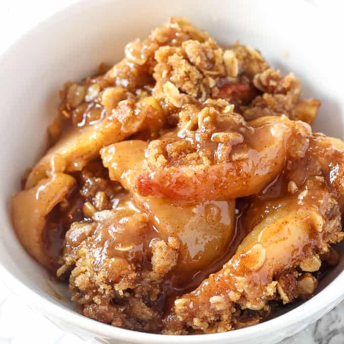

Apple Crisp

Description
A simple dessert that's great served with ice cream.
Ingredients
- Apples, sliced: 10 cups
- White Sugar: 1 cup
- All-Purpose Flour: 1 tbsp
- Cinnamon: 1 tsp
- Water: 1/2 cup
- Quick-Cooking Oats: 1 cup
- All-Purpose Flour: 1 cup
- Brown Sugar, packed: 1 cup
- Baking Powder: 1/4 tsp
- Baking Soda: 1/4 tsp
- Butter, melted: 1/2 cup
Steps
- Preheat oven to 350 degrees F (175 C)
- Place the sliced apples in a 9x13 inch pan. Mix the
white sugar, 1 tablespoon flour and ground cinnamon
together, and sprinkle over apples. Pour water evenly
over all.
- Combine the oats, 1 cup flour, brown sugar, baking
powder, baking soda and melted butter together. Crumble
evenly over the apple mixture.
- Bake for about 45 mins.